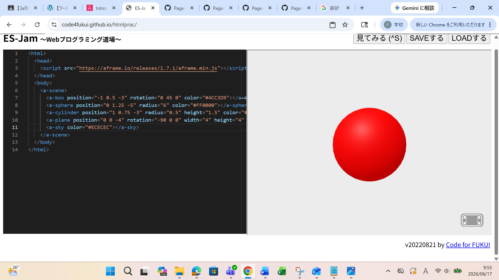
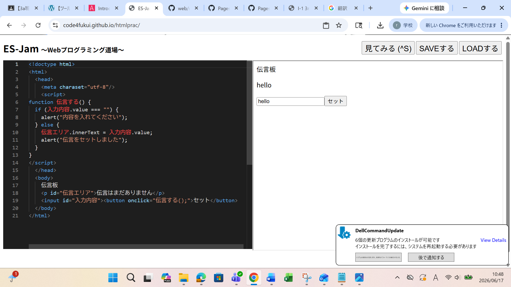

３週目のレポート ： 公大高専１年実習I-1
3a班12番 川原碧
第3週目
3-1 JavaScript体験：VR空間を作る

自作した３次元空間
1.内容
x,y,z方向にそれぞれ物体を移動させたり、回転させたりすることができる。
また、ツールを使って色を作成し、それをコピペすることで色も変えられる。
2.感想
いろいろな図形を組み合わせて、自分の作りたい像のようなものも作れるのかなと思った。
第二回でやったシューティングゲームも自作できるようになりたいと思った。
3-2 JavaScript体験：伝言プログラムを作る

伝言板
1.内容
プログラムにも頭や胴体といった部位みたいなものがある。
適切な単語を使うことで自分のやりたいように操作機能をつけたりできる。
利用者がすることを想定した機能をつけることが大事。
2.感想
今回の学習では伝言版に何も書かずにセットすると「内容を入れてください」というメッセージが出るようになっているが、
空白一つだけを入力するとこちらが想定していない動作をしてしまうのでそれにも対応できるようになりたいと思った。
各ページへのリンク
1週目のレポート
2週目のレポート
3週目のレポート
私のホームページ